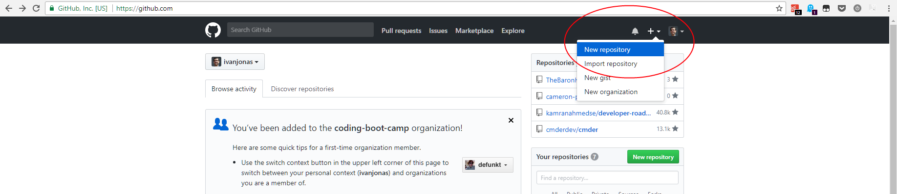
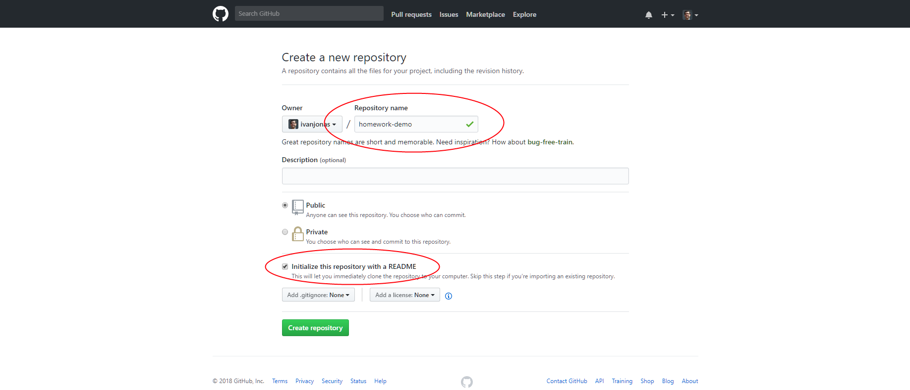
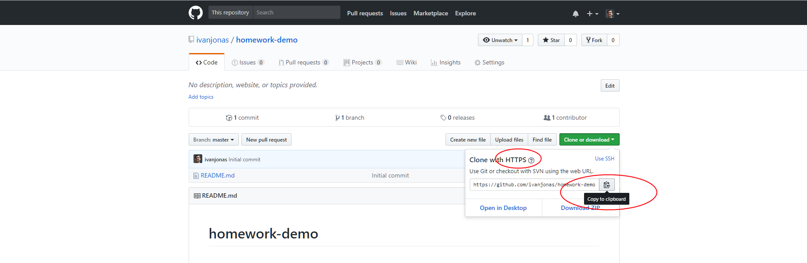
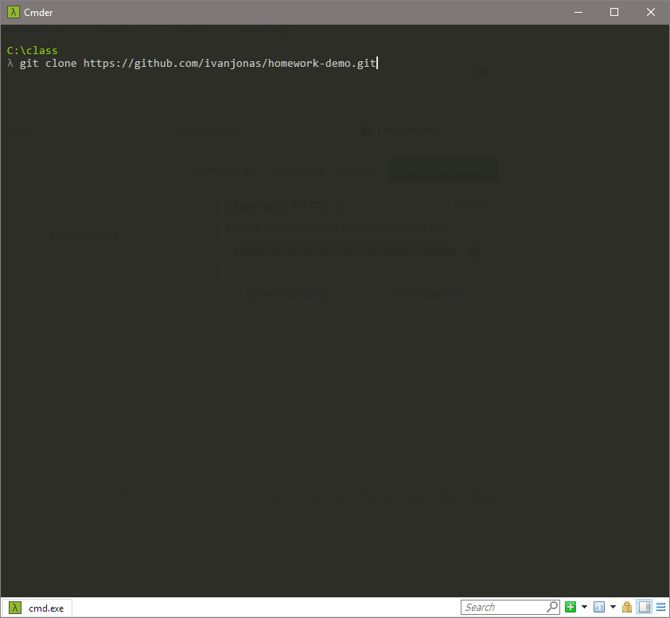
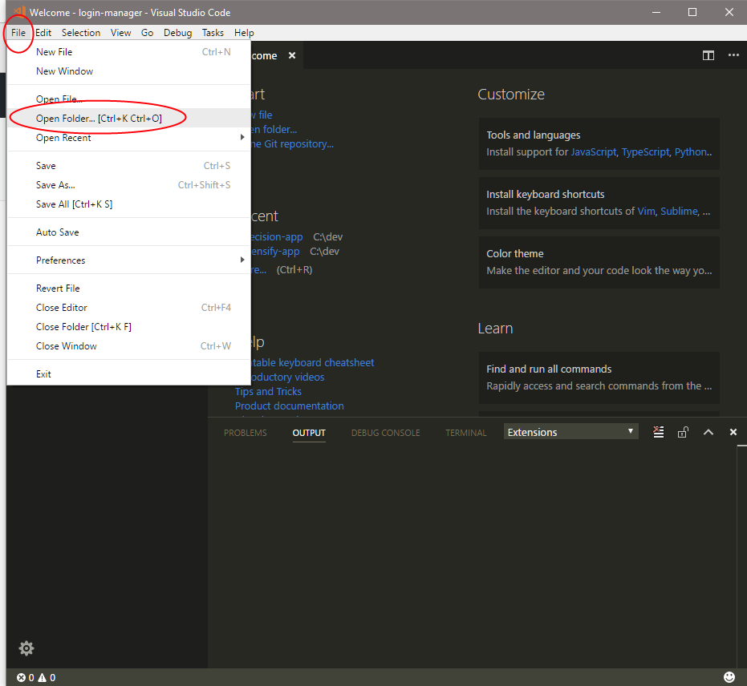
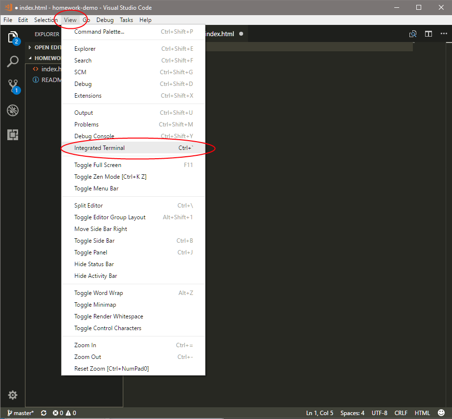
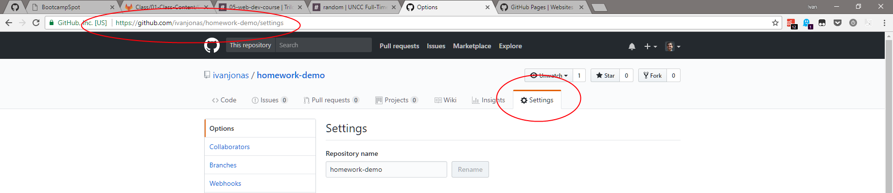
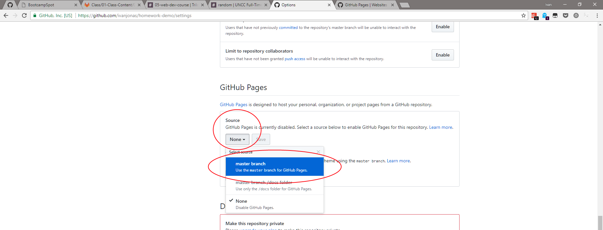
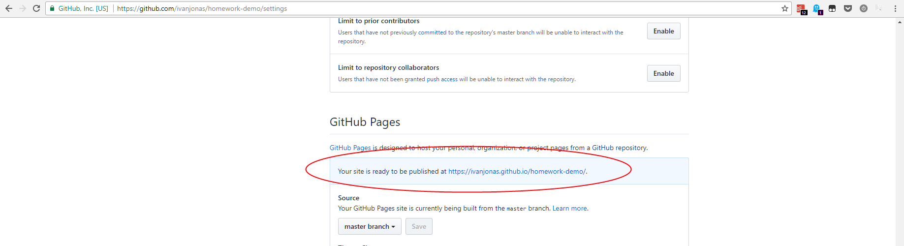

1. Go to GitHub.com and create a new repository.
2. Give it a meaningful name and initialize it with a README.
3. Copy the HTTPS cloning link.
4. In the terminal/git bash, clone your new repository.
5. Verify that the cloning succeeded: cd into the new directory and run git status.
6. In VS Code, open the entire directory as a project. The below screenshot is for Windows.
7. Now you can create a new web page. Create your index.html file and fill it with valid HTML.
8. If you wish, you may use an embedded terminal within VS Code.
9. You may run any git command in here just as you always have done, including git commit and git push.
10. The final step is to enable GitHub Pages for this project. This is a per-project setting that must be repeated for each repository you want to publish.
11. Scroll down and select "master branch" as the source and click the Save button that appears.
12. After an unnecessary and annoying page reload, the URL for your page will be shown.
And that's all!